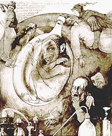

Der Homunculus: Philipp Theophrastus Bombastus v. Hohenheim, genannt "Paracelsus", 1493-1541, war der Begründer einer auf Naturbeobachtungen u. Erfahrung beruhenden Heilkunde und gilt als Vorläufer einer ganzheitlichen Medizin. Einen zweifelhaften Ruf erwarb sich Paracelsus, als er behauptete, er könne einen Menschen künstlich erzeugen. Er veröffentlichte folgendes Rezept: "Man nehme einen luftdichten Behälter mit menschlichem Sperma, vergrabe es 40 Tage lang im Pferdemist, magnetisiere es und füttere es weitere 40 Tage mit Menschenblut." Der sogenannte "Homunculus" versetzte ganz Europa in Entsetzen. Die in Goethes Faust II beschriebene Erzeugung eines Homunculus folgt Paracelsus Anleitung. In den Homilien des Clemens Romanus (etwa 250 n. Chr.) findet sich ein Bericht über Simon Magus, der einen Menschen aus Luft, die er erst in Wasser, danach in Blut und schließlich in Fleisch verwandelte, erschaffen haben soll.